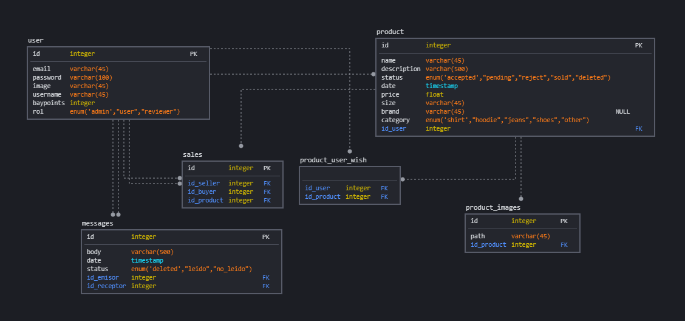

Descripción
Desde BayShop entendemos la necesidad de tener que deshacerte de ropa que ya no usas y que está en buen estado. Además, ¡da un giro a tu imaginación subiendo tus propios diseños de ropa y saca provecho de ello! Por eso te damos la oportunidad
de que obtengas dinero por venderla dándole una segunda vida a tus prendas y que las reutilice otra persona. También, puedes hacer de comprador y obtener prendas geniales a un precio ridículo. El sistema posee un sistema de puntos que se pueden
ganar cuando compres productos en la plataforma. Estos puntos se podrán canjear en el carrito de la compra descontando dinero equivalente del precio total de la compra (hay un límite de cantidad de puntos que un usuario puede acumular).
Repositorio
BayShop
Vistas disponibles en la aplicación:
- Vista login y register: aquí y aquí respectivamente
- Vista principal de todos los productos: aquí
- Vista detallada de un producto: aquí
- Vista del revisor de contenido: aquí
- Vista del administrador: aquí
- Vista para crear un producto: aquí
- Vista perfil de un usuario: aquí
- Vista principal de todos los mensajes: aquí
- Vista detallada de un mensaje: aquí
- Vista detallada del resumen de tu compra: aquí
Base de datos
Hemos usado SqlDBM para general el siguiente esquema:

Recursos usados
-
Logo de la aplicación: el logo lo hemos descargado de flaticon, pudiendo usarlo en nuestra aplicación siempre que se atribuya el logo al autor, como nombra en su propia web (logo en cuestión: aquí).
-
jQuery 3.2.1 (download)
-
Bootstrap 4.0.0 (download)
-
Font Awesome 4.7.0 (download)
-
Fuente de la web (download)
Pruebas
Para las pruebas hemos usado "karate-ui" ya que esta herramienta nos permite ver en todo momennto el flujo de la aplicación de forma visual.
El archivo src/test/karate-ui/principal.feature contiene la prueba que hemos desarrollado, la cual incluye
- Conexión a nuestra aplicación y login a la misma
- Acceso a la página principal y acción de click a vista detalle de un producto
- Acceso a la página detalle de un producto y acción de click a comprar el producto
- Acceso a la página de resumen de compra y click en comprar para confirmar la compra
Montaje de proyecto
Acceder a la carpeta bayshop y ejecutar mvn spring-boot:run
Usuarios
- username: a pass: a rol: admin
- username: b pass: a rol: user
- username: peri pass: a rol: moderator, admin, user
- username: revisor pass: a rol: moderator
Cosas que no funcionan
- Consulta de compras: la consulta de las propias compras da error (comentada de momento)
- Faltan las imágenes: no se han probado aún